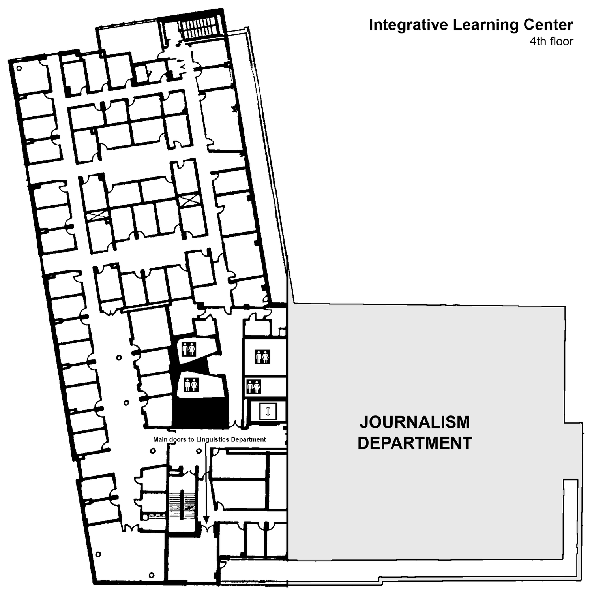

Research participation
EEG During Language Processing · UMass Amherst Linguistics
Thank you for your interest in participating in our study! You can sign up to our study in a few easy steps.
- You first need to create your linguistics SONA account, if you do not already have one. To do so, click HERE. Click “Request Account.” Enter your information, and for the drop-down menu under “courses,” select the course you are earning credit for, or select “Non-course compensation” if you want to be paid. If you already have a linguistics SONA account, go to step (2).
- Once you have logged in, open the listing that matches how you want to be compensated:
- Find a time slot that works for you, and book it!
- We look forward to seeing you in the lab! Our lab
is located on the fourth floor of the Integrative Learning Center (near the
student union and the student center). The room number is ILC N446.
If your appointment is outside of business hours and the building is locked, the experimenter will meet you at the front double doors of the building facing North Pleasant Street.

Directions for finding N446 on fourth floor of the ILC. Please do not hesitate to contact us if you have any questions or concerns: umasseeglab@gmail.com.
{kind=link}